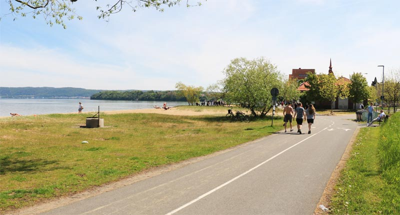
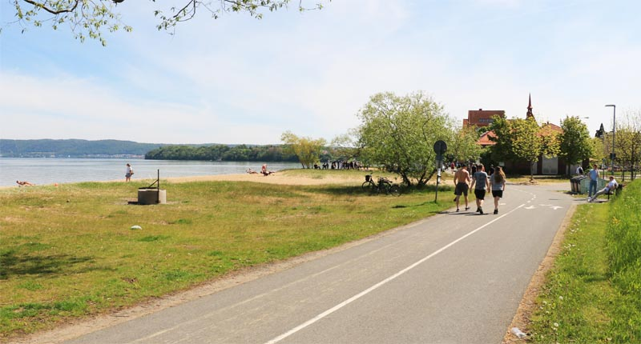

What can you do here?
This city offers a lot of different activities such as shopping, eating, or just taking a walk to see the beautiful nature.
Asecs is a large shopping mall located in the east of Jönköping which has all the stores and restaurants to spend a whole day in.
There's also lake Vättern, the second largest lake in Sweden not too far from the city; a perfect place to go to the beach and have a swim, or enjoy the scenery.
What are good places to eat?
If you want to eat good food with a nice view, the restaurants by the lake Munksjön is the place to go.
La Vue and N.E.O offer an exclusive and comfortable dining experience, and Bastard Burgers has authentic burgers that will fill your stomach.
What are good places to go out?
If you're a student at Jönköping University there are several clubs and bars, like Akademien and Glädje.
But if you just want to enjoy a night out in the town, Bongo Bar and the clubs by the pier has a vivid nightlife as well.
 
